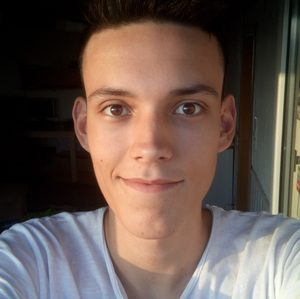

My name is Patrick Haußmann.
I am a physics master student in Munich, Germany at LMU, focusing on nanophysics and semiconductor physics.
Currently working on my master's thesis "Cryogenic Ultra-Fast Optical Spectroscopy on Perovskite Nanocrystal Dispersions" in the Nanospectroscopy Group.
This work resulted in the co-authored paper "Design Rules for Perovskite Nanocrystals: Volume-Governed Absorption Versus Shape-Controlled Auger Recombination".
I'm part of UniKult e.V., a student-run non-profit breathing new life into LMU's historic buildings.
I've worn a few hats there — from CFO to Head of IT.
I built our on-premise high-availability cluster for our customized ticketing-tool, led the transition to fully cashless events, and regularly develop custom tools whether it's for Unikult's digital infrastructure or just for fun for me and friends.
Feel free to connect! You can reach me directly at: mail@patrickhaussmann.de, LinkedIn, or check out my CV